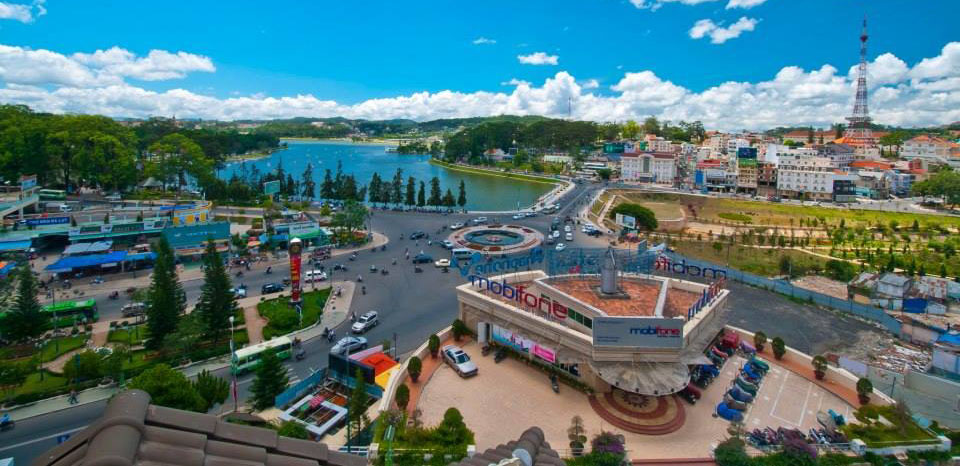

Tour du lịch tại công ty Thiên Nhân Travel

Hà Nội
3 Ngày 2 Đêm
Phương tiện: Ô tô
khởi hành: thứ 6 hàng tuần
LỊCH TRÌNH
NGÀY 1 (THỨ 6): HÀ NỘI - HÀ GIANG - QUẢNG BẠ - YÊN MINH (ĂN TRƯA,TỐI) - 05h30: Xe và hướng dẫn viên công ty du lịch đón quý khách tại điểm hẹn trong thành phố khởi hành đi Tuyên Quang (138 km), trên đường đoàn dừng chân nghỉ ngơi ăn sáng (chi phí tự túc), sau đó tiếp tục hành trình đi Hà Giang. NGÀY 1 (THỨ 6): HÀ NỘI - HÀ GIANG - QUẢNG BẠ - YÊN MINH (ĂN TRƯA,TỐI) - 05h30: Xe và hướng dẫn viên công ty du lịch đón quý khách tại điểm hẹn trong thành phố khởi hành đi Tuyên Quang (138 km), trên đường đoàn dừng chân nghỉ ngơi ăn sáng (chi phí tự túc), sau đó tiếp tục hành trình đi Hà Giang. NGÀY 1 (THỨ 6): HÀ NỘI - HÀ GIANG - QUẢNG BẠ - YÊN MINH (ĂN TRƯA,TỐI) - 05h30: Xe và hướng dẫn viên công ty du lịch đón quý khách tại điểm hẹn trong thành phố khởi hành đi Tuyên Quang (138 km), trên đường đoàn dừng chân nghỉ ngơi ăn sáng (chi phí tự túc), sau đó tiếp tục hành trình đi Hà Giang. NGÀY 1 (THỨ 6): HÀ NỘI - HÀ GIANG - QUẢNG BẠ - YÊN MINH (ĂN TRƯA,TỐI) - 05h30: Xe và hướng dẫn viên công ty du lịch đón quý khách tại điểm hẹn trong thành phố khởi hành đi Tuyên Quang (138 km), trên đường đoàn dừng chân nghỉ ngơi ăn sáng (chi phí tự túc), sau đó tiếp tục hành trình đi Hà Giang. NGÀY 1 (THỨ 6): HÀ NỘI - HÀ GIANG - QUẢNG BẠ - YÊN MINH (ĂN TRƯA,TỐI) - 05h30: Xe và hướng dẫn viên công ty du lịch đón quý khách tại điểm hẹn trong thành phố khởi hành đi Tuyên Quang (138 km), trên đường đoàn dừng chân nghỉ ngơi ăn sáng (chi phí tự túc), sau đó tiếp tục hành trình đi Hà Giang. NGÀY 1 (THỨ 6): HÀ NỘI - HÀ GIANG - QUẢNG BẠ - YÊN MINH (ĂN TRƯA,TỐI) - 05h30: Xe và hướng dẫn viên công ty du lịch đón quý khách tại điểm hẹn trong thành phố khởi hành đi Tuyên Quang (138 km), trên đường đoàn dừng chân nghỉ ngơi ăn sáng (chi phí tự túc), sau đó tiếp tục hành trình đi Hà Giang.DỊCH VỤ ĐI KÈM
NGÀY 1 (THỨ 6): HÀ NỘI - HÀ GIANG - QUẢNG BẠ - YÊN MINH (ĂN TRƯA,TỐI) - 05h30: Xe và hướng dẫn viên công ty du lịch đón quý khách tại điểm hẹn trong thành phố khởi hành đi Tuyên Quang (138 km), trên đường đoàn dừng chân nghỉ ngơi ăn sáng (chi phí tự túc), sau đó tiếp tục hành trình đi Hà Giang. NGÀY 1 (THỨ 6): HÀ NỘI - HÀ GIANG - QUẢNG BẠ - YÊN MINH (ĂN TRƯA,TỐI) - 05h30: Xe và hướng dẫn viên công ty du lịch đón quý khách tại điểm hẹn trong thành phố khởi hành đi Tuyên Quang (138 km), trên đường đoàn dừng chân nghỉ ngơi ăn sáng (chi phí tự túc), sau đó tiếp tục hành trình đi Hà Giang. NGÀY 1 (THỨ 6): HÀ NỘI - HÀ GIANG - QUẢNG BẠ - YÊN MINH (ĂN TRƯA,TỐI) - 05h30: Xe và hướng dẫn viên công ty du lịch đón quý khách tại điểm hẹn trong thành phố khởi hành đi Tuyên Quang (138 km), trên đường đoàn dừng chân nghỉ ngơi ăn sáng (chi phí tự túc), sau đó tiếp tục hành trình đi Hà Giang. NGÀY 1 (THỨ 6): HÀ NỘI - HÀ GIANG - QUẢNG BẠ - YÊN MINH (ĂN TRƯA,TỐI) - 05h30: Xe và hướng dẫn viên công ty du lịch đón quý khách tại điểm hẹn trong thành phố khởi hành đi Tuyên Quang (138 km), trên đường đoàn dừng chân nghỉ ngơi ăn sáng (chi phí tự túc), sau đó tiếp tục hành trình đi Hà Giang. NGÀY 1 (THỨ 6): HÀ NỘI - HÀ GIANG - QUẢNG BẠ - YÊN MINH (ĂN TRƯA,TỐI) - 05h30: Xe và hướng dẫn viên công ty du lịch đón quý khách tại điểm hẹn trong thành phố khởi hành đi Tuyên Quang (138 km), trên đường đoàn dừng chân nghỉ ngơi ăn sáng (chi phí tự túc), sau đó tiếp tục hành trình đi Hà Giang. NGÀY 1 (THỨ 6): HÀ NỘI - HÀ GIANG - QUẢNG BẠ - YÊN MINH (ĂN TRƯA,TỐI) - 05h30: Xe và hướng dẫn viên công ty du lịch đón quý khách tại điểm hẹn trong thành phố khởi hành đi Tuyên Quang (138 km), trên đường đoàn dừng chân nghỉ ngơi ăn sáng (chi phí tự túc), sau đó tiếp tục hành trình đi Hà Giang.ĐIỀU KHOẢN
NGÀY 1 (THỨ 6): HÀ NỘI - HÀ GIANG - QUẢNG BẠ - YÊN MINH (ĂN TRƯA,TỐI) - 05h30: Xe và hướng dẫn viên công ty du lịch đón quý khách tại điểm hẹn trong thành phố khởi hành đi Tuyên Quang (138 km), trên đường đoàn dừng chân nghỉ ngơi ăn sáng (chi phí tự túc), sau đó tiếp tục hành trình đi Hà Giang. NGÀY 1 (THỨ 6): HÀ NỘI - HÀ GIANG - QUẢNG BẠ - YÊN MINH (ĂN TRƯA,TỐI) - 05h30: Xe và hướng dẫn viên công ty du lịch đón quý khách tại điểm hẹn trong thành phố khởi hành đi Tuyên Quang (138 km), trên đường đoàn dừng chân nghỉ ngơi ăn sáng (chi phí tự túc), sau đó tiếp tục hành trình đi Hà Giang. NGÀY 1 (THỨ 6): HÀ NỘI - HÀ GIANG - QUẢNG BẠ - YÊN MINH (ĂN TRƯA,TỐI) - 05h30: Xe và hướng dẫn viên công ty du lịch đón quý khách tại điểm hẹn trong thành phố khởi hành đi Tuyên Quang (138 km), trên đường đoàn dừng chân nghỉ ngơi ăn sáng (chi phí tự túc), sau đó tiếp tục hành trình đi Hà Giang. NGÀY 1 (THỨ 6): HÀ NỘI - HÀ GIANG - QUẢNG BẠ - YÊN MINH (ĂN TRƯA,TỐI) - 05h30: Xe và hướng dẫn viên công ty du lịch đón quý khách tại điểm hẹn trong thành phố khởi hành đi Tuyên Quang (138 km), trên đường đoàn dừng chân nghỉ ngơi ăn sáng (chi phí tự túc), sau đó tiếp tục hành trình đi Hà Giang. NGÀY 1 (THỨ 6): HÀ NỘI - HÀ GIANG - QUẢNG BẠ - YÊN MINH (ĂN TRƯA,TỐI) - 05h30: Xe và hướng dẫn viên công ty du lịch đón quý khách tại điểm hẹn trong thành phố khởi hành đi Tuyên Quang (138 km), trên đường đoàn dừng chân nghỉ ngơi ăn sáng (chi phí tự túc), sau đó tiếp tục hành trình đi Hà Giang. NGÀY 1 (THỨ 6): HÀ NỘI - HÀ GIANG - QUẢNG BẠ - YÊN MINH (ĂN TRƯA,TỐI) - 05h30: Xe và hướng dẫn viên công ty du lịch đón quý khách tại điểm hẹn trong thành phố khởi hành đi Tuyên Quang (138 km), trên đường đoàn dừng chân nghỉ ngơi ăn sáng (chi phí tự túc), sau đó tiếp tục hành trình đi Hà Giang.CHÍNH SÁCH ĐỔI/HỦY TOUR
NGÀY 1 (THỨ 6): HÀ NỘI - HÀ GIANG - QUẢNG BẠ - YÊN MINH (ĂN TRƯA,TỐI) - 05h30: Xe và hướng dẫn viên công ty du lịch đón quý khách tại điểm hẹn trong thành phố khởi hành đi Tuyên Quang (138 km), trên đường đoàn dừng chân nghỉ ngơi ăn sáng (chi phí tự túc), sau đó tiếp tục hành trình đi Hà Giang. NGÀY 1 (THỨ 6): HÀ NỘI - HÀ GIANG - QUẢNG BẠ - YÊN MINH (ĂN TRƯA,TỐI) - 05h30: Xe và hướng dẫn viên công ty du lịch đón quý khách tại điểm hẹn trong thành phố khởi hành đi Tuyên Quang (138 km), trên đường đoàn dừng chân nghỉ ngơi ăn sáng (chi phí tự túc), sau đó tiếp tục hành trình đi Hà Giang. NGÀY 1 (THỨ 6): HÀ NỘI - HÀ GIANG - QUẢNG BẠ - YÊN MINH (ĂN TRƯA,TỐI) - 05h30: Xe và hướng dẫn viên công ty du lịch đón quý khách tại điểm hẹn trong thành phố khởi hành đi Tuyên Quang (138 km), trên đường đoàn dừng chân nghỉ ngơi ăn sáng (chi phí tự túc), sau đó tiếp tục hành trình đi Hà Giang. NGÀY 1 (THỨ 6): HÀ NỘI - HÀ GIANG - QUẢNG BẠ - YÊN MINH (ĂN TRƯA,TỐI) - 05h30: Xe và hướng dẫn viên công ty du lịch đón quý khách tại điểm hẹn trong thành phố khởi hành đi Tuyên Quang (138 km), trên đường đoàn dừng chân nghỉ ngơi ăn sáng (chi phí tự túc), sau đó tiếp tục hành trình đi Hà Giang. NGÀY 1 (THỨ 6): HÀ NỘI - HÀ GIANG - QUẢNG BẠ - YÊN MINH (ĂN TRƯA,TỐI) - 05h30: Xe và hướng dẫn viên công ty du lịch đón quý khách tại điểm hẹn trong thành phố khởi hành đi Tuyên Quang (138 km), trên đường đoàn dừng chân nghỉ ngơi ăn sáng (chi phí tự túc), sau đó tiếp tục hành trình đi Hà Giang. NGÀY 1 (THỨ 6): HÀ NỘI - HÀ GIANG - QUẢNG BẠ - YÊN MINH (ĂN TRƯA,TỐI) - 05h30: Xe và hướng dẫn viên công ty du lịch đón quý khách tại điểm hẹn trong thành phố khởi hành đi Tuyên Quang (138 km), trên đường đoàn dừng chân nghỉ ngơi ăn sáng (chi phí tự túc), sau đó tiếp tục hành trình đi Hà Giang.LƯU Ý
NGÀY 1 (THỨ 6): HÀ NỘI - HÀ GIANG - QUẢNG BẠ - YÊN MINH (ĂN TRƯA,TỐI) - 05h30: Xe và hướng dẫn viên công ty du lịch đón quý khách tại điểm hẹn trong thành phố khởi hành đi Tuyên Quang (138 km), trên đường đoàn dừng chân nghỉ ngơi ăn sáng (chi phí tự túc), sau đó tiếp tục hành trình đi Hà Giang. NGÀY 1 (THỨ 6): HÀ NỘI - HÀ GIANG - QUẢNG BẠ - YÊN MINH (ĂN TRƯA,TỐI) - 05h30: Xe và hướng dẫn viên công ty du lịch đón quý khách tại điểm hẹn trong thành phố khởi hành đi Tuyên Quang (138 km), trên đường đoàn dừng chân nghỉ ngơi ăn sáng (chi phí tự túc), sau đó tiếp tục hành trình đi Hà Giang. NGÀY 1 (THỨ 6): HÀ NỘI - HÀ GIANG - QUẢNG BẠ - YÊN MINH (ĂN TRƯA,TỐI) - 05h30: Xe và hướng dẫn viên công ty du lịch đón quý khách tại điểm hẹn trong thành phố khởi hành đi Tuyên Quang (138 km), trên đường đoàn dừng chân nghỉ ngơi ăn sáng (chi phí tự túc), sau đó tiếp tục hành trình đi Hà Giang. NGÀY 1 (THỨ 6): HÀ NỘI - HÀ GIANG - QUẢNG BẠ - YÊN MINH (ĂN TRƯA,TỐI) - 05h30: Xe và hướng dẫn viên công ty du lịch đón quý khách tại điểm hẹn trong thành phố khởi hành đi Tuyên Quang (138 km), trên đường đoàn dừng chân nghỉ ngơi ăn sáng (chi phí tự túc), sau đó tiếp tục hành trình đi Hà Giang. NGÀY 1 (THỨ 6): HÀ NỘI - HÀ GIANG - QUẢNG BẠ - YÊN MINH (ĂN TRƯA,TỐI) - 05h30: Xe và hướng dẫn viên công ty du lịch đón quý khách tại điểm hẹn trong thành phố khởi hành đi Tuyên Quang (138 km), trên đường đoàn dừng chân nghỉ ngơi ăn sáng (chi phí tự túc), sau đó tiếp tục hành trình đi Hà Giang. NGÀY 1 (THỨ 6): HÀ NỘI - HÀ GIANG - QUẢNG BẠ - YÊN MINH (ĂN TRƯA,TỐI) - 05h30: Xe và hướng dẫn viên công ty du lịch đón quý khách tại điểm hẹn trong thành phố khởi hành đi Tuyên Quang (138 km), trên đường đoàn dừng chân nghỉ ngơi ăn sáng (chi phí tự túc), sau đó tiếp tục hành trình đi Hà Giang.Tours du lịch tương tự
Tour du lịch công ty Thiên Nhân - Thien Nhan Travel
Trong Ngày
Phương tiện: Ôtô, xe máy